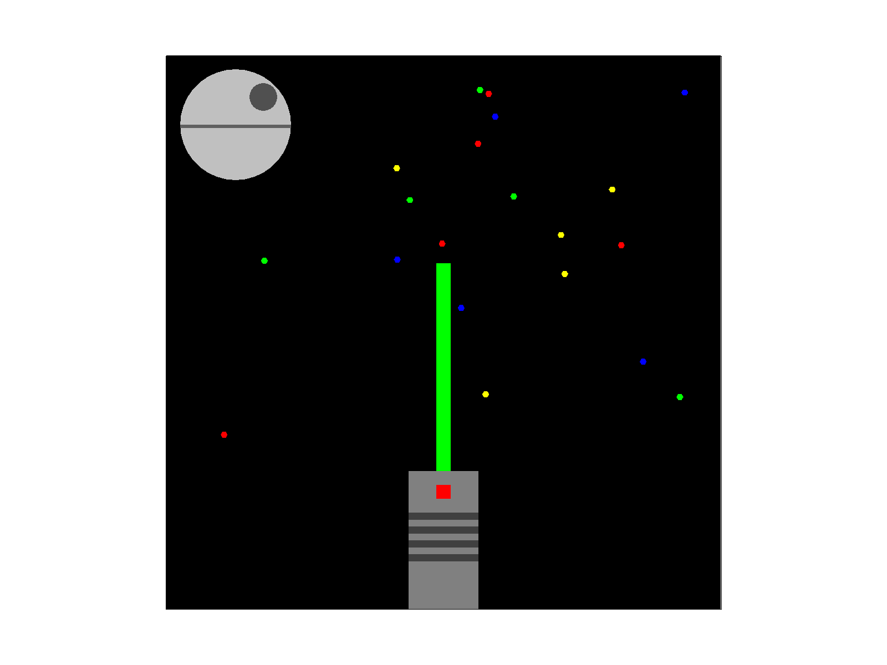

CS184/284A Spring 2025 Homework 1 Write-Up
Work by: Sultan Jamalbekov
Link to webpage
Link to GitHub repository: (TODO) cs184.eecs.berkeley.edu/sp25
Overview
The essence of this homework was to implement a rasterizer. Given SVG images that represent different geometric shapes with coordinates, we want to toggle pixels of a framebuffer to be displayed on a raster screen. I have implemented a function that rasterizer triangles: the cornerstone polygon of computer graphics. Then I implemented supersampling: same screen resolution captures more information about the geometry represented by the file. I also implemnted methods that enable transformations: scaling, rotation, translation of geometric shapes. Finally, I implemented methods that allow us to apply textures: mapping texture image to pixels. Eventually, the way an SVG image is processed is determined by: supersampling rate, pixel sampling method (nearest or bilinear), and the type of level sampling (0, nearest, trilinear).Task 1: Drawing Single-Color Triangles
-
Walk through how you rasterize triangles in your own words.
- I determine the bounding box of the triangle, traverse each pixel. For a given pixel, I calculate the weights in barycentric coordinates. If all are ≥ 0 then the point is within triangle or on the edge. Otherwise, point is outside the triangle. If the point is inside triangle, we set color of the corresponding pixel in the framebuffer. Essentially, the process of rasterization converts from geometry (defined by three vertices) to a colored grid of pixels that will be displayed on a raster screen.
-
Explain how your algorithm is no worse than one that checks each sample within the bounding box of the triangle. The bounding box of the triangle is defined as the smallest rectangle that can be drawn whilst ensuring that the entire triangle is within it.
- In my algorithm, I determine the smallest and largest values of x and y taken by the triangle’s vertices. I traverse horizontally from minimal x to maximal x, and vertically from minimal y to maximal y. In principle, this is equivalent to traversing each pixel within the bounding box of the triangle.
- Show a png screenshot of basic/test4.svg with the default viewing parameters and with the pixel inspector centered on an interesting part of the scene.

Task 2: Antialiasing by Supersampling
-
Walk through your supersampling algorithm and data structures. Why is supersampling useful? What modifications did you make to the rasterization pipeline in the process? Explain how you used supersampling to antialias your triangles.
- I convert given vertex coordinates to integers. Find the bounds of the triangle’s bounding box. Check if the bounding box is within the framebuffer. Get a square root of the sampling rate and determine the step to take within a pixel’s area for supersampling. Start traversing pixels within the bounding box. For a given pixel, check center of each supersample grid region: whether it is inside triangle or not using barycentric coordinates. If the element of the pixels supersample grid is within a triangle, it’s color is written into the supersample buffer. Supersample buffer is represented by the “sample_buffer” vector of “Color” objects. Its size is the size of the framebuffer scaled by the sampling rate. The super sample buffer is then resolved into the framebuffer through “rgb_framebuffer_target” - an array of 8-bit values. The framebuffer is cleared and updated at every iteration.
- To implement the rasterization pipeline, I had to rewrite the “fill_pixel” method. Previously, it simply wrote color values directly to framebuffer. Now, it writes to the supersample buffer. Additionally, I had to avoid supersampling of lines and points. That is why I added an additional parameter - sample_idx - that is passed into “fill_pixel”. The value of “sample_idx” is non-zero for triangles, and zero for points and lines. I also had to change the call to “sample_buffer.resize()” inside “set_framebuffer_target” to ensure that the size of the sample_buffer is scaled by the sampling rate.
- Supersampling allows us to capture more information about the geometry we want to process, while using the same resolution. It is especially useful for edges/thin regions where pixels with centers outside the triangle can still affect the final image if the elements of their supersampling grid are inside.
-
Show png screenshots of basic/test4.svg with the default viewing parameters and sample rates 1, 4, and 16 to compare them side-by-side. Position the pixel inspector over an area that showcases the effect dramatically; for example, a very skinny triangle corner. Explain why these results are observed.

1 
2 
9 
16 -
The results can be explained by use of supersampling as an antialiasing method. With a sampling rate more than 1, even pixels whose centers do not fit into the thin edge of the triangles can affect the final render. Larger supersampling grids allow us to capture pixels that only partially overlap with triangles into the framebuffer.
Task 3: Transforms
- Create an updated version of svg/transforms/robot.svg with cubeman doing something more interesting, like waving or running. Feel free to change his colors or proportions to suit your creativity. Save your svg file as my_robot.svg in your docs/ directory and show a png screenshot of your rendered drawing in your write-up. Explain what you were trying to do with cubeman in words.
-

The new upcoming movie is the Superman by James Gun. It made me think that a flying superman pose would be cool. I rotated his hands so that he is flying (also got them closer to shoulders). Changed color of the legs so that they look like boots. Added the famous old comics pants with a yellow belt. Yellow triangle as the “S” (hope) logo.
Task 4: Barycentric coordinates
-
Explain barycentric coordinates in your own words and use an image to aid you in your explanation. One idea is to use a svg file that plots a single triangle with one red, one green, and one blue vertex, which should produce a smoothly blended color triangle.
- Barycentric coordinates allow you to specify a point using vertices of a triangle. You need to specify weights that define the relationship between the point and the vertices. Representing affine transformations, the weights sum up to 1. All-positive weights mean that point is inside a triangle. Weight equal to zero means point is on the edge.
- Check out this triangle PNG, and notice how the color of the point is different each time. It is dependent on the barycentric weights. The closer a certain vertex is to the point the more effect it has. It can be used for smoother changes of colors:

- Show a png screenshot of svg/basic/test7.svg with default viewing parameters and sample rate 1. If you make any additional images with color gradients, include them.

Task 5: "Pixel sampling" for texture mapping
-
Explain pixel sampling in your own words and describe how you implemented it to perform texture mapping. Briefly discuss the two different pixel sampling methods, nearest and bilinear.
- The essence of pixel sampling is in determining pixels given some input. In our case, we want to determine a pixel of a texture that will be mapped onto some 3D object. Like wrapping a model of a chocolate candy with the pixels of the wrap texture. In principle, texture mapping is a sampling problem. For each screen coordinate, we determine corresponding texture coordinate and then use it to sample the color of a pixel.
- In my code, two methods are used: nearest neighbor sampling and bilinear sampling. Nearest neighbor picks the color of the nearest texel to the UV coordinate. Bilinear blends colors of four closest texels. Former is faster but can be more jaggy. Latter produces smoother results but is more computationally expensive.
-
Check out the svg files in the svg/texmap/ directory. Use the pixel inspector to find a good example of where bilinear sampling clearly defeats nearest sampling. Show and compare four png screenshots using nearest sampling at 1 sample per pixel, nearest sampling at 16 samples per pixel, bilinear sampling at 1 sample per pixel, and bilinear sampling at 16 samples per pixel.

Bilinear 1 
Nearest 1 
Bilinear 16 
Nearest 16 -
Comment on the relative differences. Discuss when there will be a large difference between the two methods and why.
- There seemed to be no difference until I zoomed in. The thin shadow on UC Berkeley's big clock tower looked better/smoother when bilinear sampling was used.
- This makes sense to me. I would expect bilinear sampling to provide smoother transitions/changes of color when thing/sharp regions are involved.
- But as observed on the pictures, difference is less noticeable when supersampling is used. This makes sense too. Even though nearest neighbor sampling does not incorporate information/colors from neighobring pixels, that is what supersampling can do.
Task 6: "Level Sampling" with mipmaps for texture mapping
-
Explain level sampling in your own words and describe how you implemented it for texture mapping.
- Footprint of a pixel is defined by the area of the texture that is covered by a single pixel. If there is a painting to be displayed on the screen and it is far away in the scene then a single pixel can cover a big chunk of the painting and fine details will be lost. But if the painting is close in the scene then pixels of the screen will probably need a higher resolution image to display the fine/high-frequency details.
- Magnification occurs if per single texel we are mapping to x > 1 pixels
- Minificaiotn occurs if per x > 1 texels we are mapping to 1 pixel.
- So sometimes, sampling from the full resolution image is not necessarily a good idea. The idea of level sampling is to take original image in full resolution, pass through low-pass filter and then downsample to the appropriate size. Each successive lower resolution forms a level: a mipmap level. During texture mapping, you will then use the texture file with resolution that approximates the screen sampling rate. Big footprint - low resolution map. Small footprint - high resolution map. And during sampling, we fetch texture data from the appropriate map (or combine from several).
- In code, there is the “rasterize_textured_triangle” function. It starts as normal rasterization. We supersample each given pixel. But the color is determined through “tex.sample”. The parameters passed into “tex.sample” can be used to assess the stretch of the texture and determine the appropriate mipmap level with the “get_level” method that uses the log2 formula. The “tex.sample” then returns the appropriate color that is determined by pixel sampling method (nearest or bilinear) and level sampling method (zero, nearest, interpolation).
-
You can now adjust your sampling technique by selecting pixel sampling, level sampling, or the number of samples per pixel. Describe the tradeoffs between speed, memory usage, and antialiasing power between the three various techniques.
-
Pixel Sampling
- Speed: Faster with simpler methods (e.g., single texel lookup) due to fewer texture fetches and less computation. More complex blending slows it down.
- Memory Usage: Low. Only accesses texels from one mipmap level, with minimal runtime memory overhead regardless of method.
- Antialiasing Power: Limited. Smoother sampling methods reduce blockiness within a mipmap but don’t address aliasing from improper level selection or pixel coverage.
-
Level Sampling
- Speed: Faster when using a single, fixed mipmap level. Slower when calculating footprint to select or blend between levels due to added computations.
- Memory Usage: Moderate. Requires storing all mipmap levels (~33% more than base texture), with slight runtime increases if blending multiple levels.
- Antialiasing Power: Strong. Matching mipmap level to footprint reduces aliasing (e.g., jagged edges for distant objects), with blending further smoothing level transitions.
-
Number of samples per pixel
- Speed: Fastest with one sample per pixel, as it minimizes texture fetches. Increases linearly with more samples (e.g., 9 or 16 samples slow it down significantly).
- Memory Usage: Low to moderate. No additional texture storage, but more samples increase runtime memory access due to multiple fetches.
- Antialiasing Power: High with more samples. Multiple samples (supersampling) average colors within a pixel, smoothing edges and reducing aliasing, especially for complex geometry.
-
Functionality comparison
- Pixel sampling controls local smoothness within a texture level.
- Level sampling ensures the right texture resolution for the pixel's view.
- Samples per pixel enhance edge and texture quality through averaging.
-
Pixel Sampling
-
Using a png file you find yourself, show us four versions of the image, using the combinations of L_ZERO and P_NEAREST, L_ZERO and P_LINEAR, L_NEAREST and P_NEAREST, as well as L_NEAREST and P_LINEAR.

Zero-nearest 
Zero-linear 
Nearest-nearest 
Nearest-linear
(Optional) Task 7: Extra Credit - Draw Something Creative!
-
Save your best svg file as competition.svg in your docs/ directory, and show us a 800x800 png screenshot of it in your write-up!

-
Explain how you did it. If you wrote a script to generate procedural svg files, include it in your submission in the src/directory and briefly explain how it works.
- I have produced a Python script that generates the SVG landscape file
- A sky (a gradient from #87ceeb to #e0f7fa) with a randomly placed sun.
- Three polygon layers with random peak heights, colord in shades brown (#4b2e1a to #8b6f47).
- Fifteen trees with random positions, heights from 60 to 120 px; brown trunks and green triangular foliage.
- Ground is just a brown rectangle at the bottom.
- The outcome of the script is "competition.svg" file generated into the current directory.
- Esstentially, I keep adding strings/lines into a the "svg" identifier through the "+=" operator. Once all the lines are added, file is writted with ".wrte()"
- To add randomness, I use the Python's "random" library throughout the script: it determines the sun's size and position, positioning of the mountains, positioning of the trees.
-
After the ED announcement about competition, I decided to do something more interesting/fun. So I made a "Star Wars" illustration:
The Python script with which this image was generated is "generate_saber.ipynb", available inside the "hw1" folder. Essentially, after checking the tags that were used in test images I focused on using "rect" and "polygon" to generate this illustration. Hard-coded the lightsaber. For-loop for the Death Star. Randomly placed stars using the Python's "random" module.